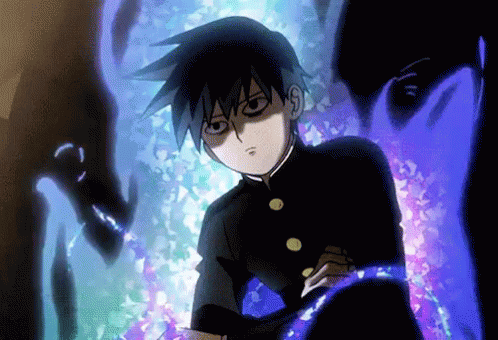
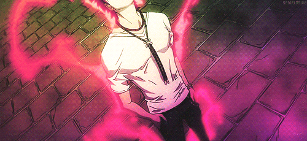
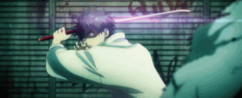
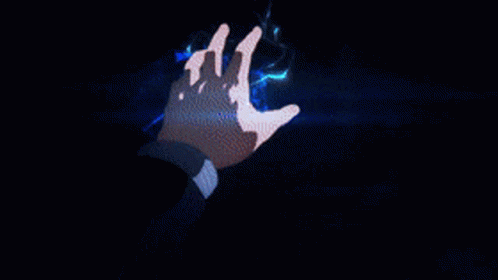
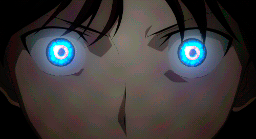
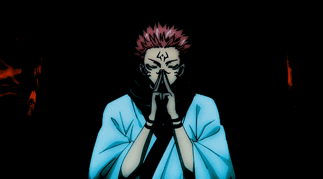

Toute Anima se manifeste sous l'une de ces deux formes fondamentales — ou d'un mélange des deux.
L'énergie reste collée au corps : elle ne se manifeste jamais hors de la personne, et tous les pouvoirs qui en découlent sont liés à son corps propre.
Point fortManipulation d'énergie à courte portée redoutable — puissance physique décuplée, protection immédiate, une force de frappe monstrueuse au corps à corps.
Point faibleInefficace à distance. Le combattant doit dépenser de l'Anima en continu pour maintenir l'effet — pas de combat à longue portée possible.
L'énergie se détache complètement du corps : sa manifestation se voit hors de la personne, indépendante d'elle une fois lancée.
Point fortDécharges à longue portée sans jamais se mêler soi-même au combat. Plusieurs attaques autonomes possibles, peu coûteuses à l'envoi, sans perte de puissance avec la distance.
Point faibleAucun contrôle une fois l'énergie hors du corps — l'attaque est indépendante, l'utilisateur ne peut plus agir dessus, et reste sans défense après l'avoir lancée.
Chaque guerrier se situe quelque part entre les deux natures. Ce point d'équilibre définit son style de combat.
Trois compétences distinctes déterminent la finesse avec laquelle un guerrier manie son Anima. Leur progression suit directement le stade du Foyer — aucun point à acheter séparément, la maîtrise grandit avec l'éveil lui-même.
La capacité à déployer son Anima autour de soi. Dans cette portée, les attaques de zone deviennent possibles.

| Foyer | Portée | Concentration |
|---|---|---|
| Latent | 5 m | Diffuse, aucun point précis |
| Noir / Sombre | 15 m | 1 point + corps entier |
| Brûlant / Ardent | 35 m | 2 points + corps entier |
| Solaire / Argent | 55 m | 3 points + corps entier |
| Gris / Blanc | 75 m et + | Points illimités, dose ajustable |
| Origine | Sans limite connue | Sans limite connue |
Insuffler son Anima dans un objet ou un corps — elle doit épouser toute la forme visée pour ne pas se disperser à l'intérieur.

| Foyer | Taille maximale imprégnable |
|---|---|
| Latent | Impossible |
| Noir / Sombre | Jusqu'à 1 m |
| Brûlant / Ardent | Jusqu'à 2 m |
| Solaire / Argent | Jusqu'à 3 m |
| Gris / Blanc | 4 m et + |
| Origine | Sans limite connue |
Donner une forme précise à son Anima. Plus le Foyer est avancé, moins la forme obtenue comporte de bavures.

| Foyer | Formes accessibles |
|---|---|
| Latent | Aléatoire, incontrôlée |
| Noir / Sombre | Géométriques simples — droite, cylindre, sphère, cube |
| Brûlant / Ardent | Complexes simples — formes d'objets |
| Solaire / Argent | Complexes avancées — humanoïdes, animales |
| Gris / Blanc | Formes imaginaires, libres |
| Origine | Sans limite connue |
Une technique naît du mélange entre la Configuration du guerrier et sa maîtrise du Contrôle de l'Anima. Il n'existe aucune limite au nombre de techniques créables — seulement la compétence pour les soutenir.

La portée d'une technique dépend directement de la Configuration du personnage, appliquée à sa portée de Résonance :
| Configuration | Portée effective |
|---|---|
| Pur Profond | ¼ de la portée de Résonance |
| Profond dominant | ½ de la portée de Résonance |
| Équilibré | Portée de Résonance (×1) |
| Libre dominant | ×2 la portée de Résonance |
| Pur Libre | ×4 la portée de Résonance |

Là se trouve l'apogée du personnage — sa technique ultime, mobilisant toutes ses facultés, représentation vivante de sa transcendance. Elle se construit avec les trois questions déjà établies (le moment, le prix, l'effet) et se déclenche toujours par un signe précis, geste qui permet de plier son Anima à sa volonté.
Ce sont des conditions que le guerrier s'impose lui-même. Plus la condition et le sacrifice qu'elle exige sont grands, plus la Manifestation gagne en puissance — c'est une version personnalisée du prix déjà défini dans sa construction, formalisée en une règle explicite que le joueur choisit d'ajouter.
Révéler sa technique ou ses compétences à quelqu'un peut, dans certains cas, augmenter considérablement sa puissance — surtout si la connaissance qui en découle est réellement utile à celui qui l'apprend. Un guerrier qui explique sa Manifestation à un allié avant un combat décisif peut ainsi la voir gagner en intensité, comme si la nommer à voix haute la rendait plus réelle.
.